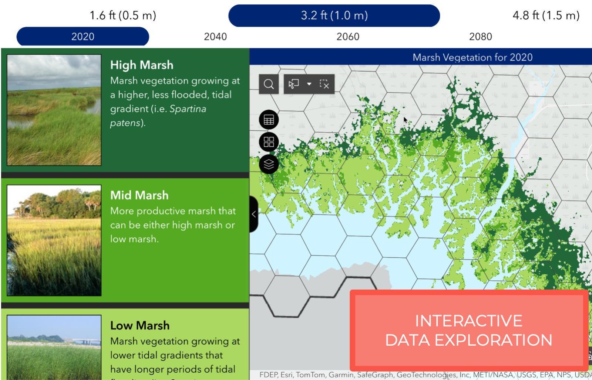
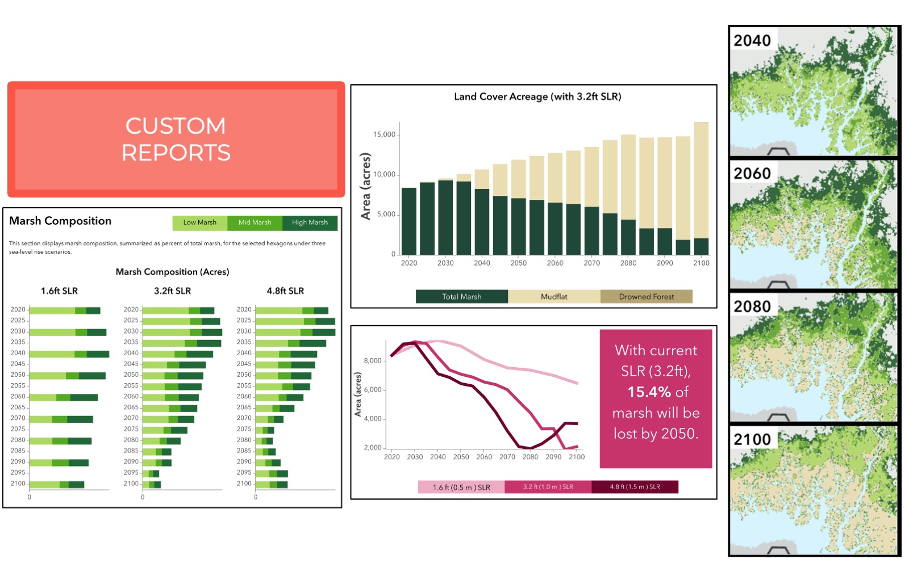
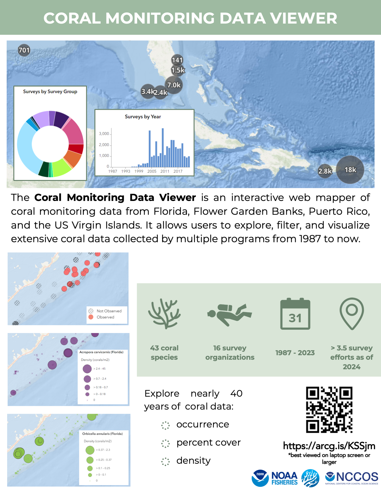
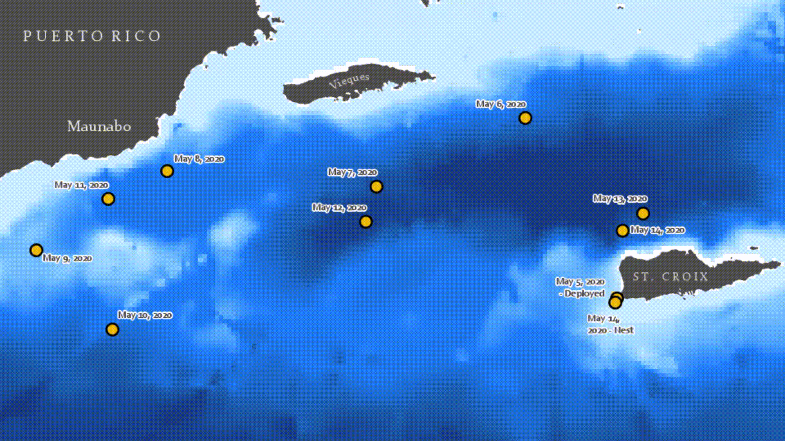
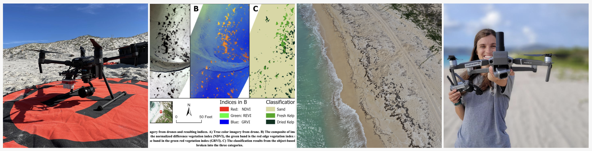

Selected Work
Projects
A selection of applied GIS work, from statewide data infrastructure to science communication.
Virginia Flood Risk Information System
In my current role, I work on the Virginia Flood Risk Information System (VFRIS). This includes making regular data updates, writing documentation for users, brainstorming future project directions, and creative decision-making.

Virginia Flood Risk Information System: view full screen here (uses: ArcGIS Enterprise, ArcGIS Online, ArcGIS Web Experience Builder, Python).
Marsh Impacts of Sea-Level Rise Data Viewer
An interactive ArcGIS Experience exploring how marsh vegetation composition shifts under different sea-level rise scenarios along the northern Gulf of Mexico. The app lets users step through projected high, mid, and low marsh distribution from 2020 to 2100 under three SLR scenarios, alongside land cover acreage trends and custom reports summarizing projected marsh loss.


Marsh Impacts of Sea-level Rise Data Viewer: view full screen here (created using ArcGIS Experience Builder using data processed in Python and graphics designed in Adobe CC).
Economic Impacts of Sea-Level Rise Data Viewer
An interactive ArcGIS Experience exploring potential economic impacts of different sea-level rise scenarios along the northern Gulf of Mexico. The app lets users step through projected high, mid, and low marsh distribution from 2020 to 2100 under three SLR scenarios.


Economic Impacts of Sea-level Rise Data Viewer: view full screen here (created using ArcGIS Experience Builder using data processed in Python and graphics designed in Adobe CC).
Mission: Iconic Reefs Large-Area Imagery
I supported Mission: Iconic Reefs' coral monitoring and education goals by creating an interactive data viewer. This viewer is not yet public, but it was designed to allow the public to explore the extensive imagery and point cloud data collected in this project. The work required extensive creative problem-solving, as typical Esri tools aren't built for the scope or scale of data collected here.
Tour of M:IR Large Area Imagery data site and its reporting capabilities (created in ArcGIS Web Experience Builder from data processed using ArcGIS Pro, Potree, Python, and R).
Coral Monitoring Data Viewer
I designed a web experience to improve the transmission of coral monitoring data to collaborators. The product is still in beta, but it will eventually be shared with the public.
Tour of Coral Monitoring Data Viewer (created using ArcGIS Experience Builder using data processed in R).

Infographic describing the goals and scope of the Coral Monitoring Data Viewer.
Graduate and St. Croix Sea Turtle Project Work
As a master's student, I conducted research on leatherback sea turtle movement and habitat use, using a variety of spatial and statistical analysis tools detailed further in my thesis. Another important part of my project was science communication — I developed graphics, animations, and presentations to share my results with a broader audience. I also became a Part 107–certified drone pilot and used drones and remotely-sensed data throughout graduate school.

Animation of leatherback turtle's transit over different ocean depths during the breeding season (created in ArcGIS Pro using data processed in R).
View poster (PDF) — presented at WSN 2022 (created in PowerPoint, graphics created in Adobe Photoshop and Adobe Illustrator, maps created in ArcGIS Pro).
Video describing preliminary findings (created using R and Adobe Premiere Pro, Illustrator, Photoshop, and After Effects).

Arizona Association of Conservation Districts Project
I served as liaison between the client (a group of environmental scientists and conservation district planners in Arizona) and our team of web developers to create a web portal for conservation planning. I collected and organized publicly available spatial datasets useful for conservation planning, and worked with the lead scientist to create numerous spatial data products — including a historic vegetation dataset derived from Ecological Site data, which we compared to current vegetation to diagnose land changes that may require restoration.
Swipe web application of historic (left) and current (right) vegetation (data created in ArcGIS Pro, visualized in ArcGIS Online).

Vegetation change map, created using historic vegetation and existing vegetation data (created in ArcGIS Pro).
Kenya Smallholder Settlement Schemes Project
As a GIS Technician and Research Assistant, I worked on the Kenya Smallholder Settlement Project, a collaboration between UR, the London School of Economics, and the National Land Commission of Kenya. The project was a large effort to locate, georeference, and digitize maps of smallholder settlement schemes throughout Kenya, and to prepare a dataset for publication. I managed interns, conducted georeferencing and digitization, managed the database, ran analyses and QA/QC checks, wrote metadata, prepared figures, and wrote reports. Since the project concluded, the dataset has been published in the Harvard Dataverse. I also presented a poster on my findings at the American Association of Geographers (AAG) annual meeting in 2019.
Kenya's Smallholder Settlement Schemes and environmental data (created in ArcMap, visualized in ArcGIS Online).
View poster (PDF) — presented at the AAG Annual Meeting, 2019 (maps and analysis created in ArcGIS Pro).